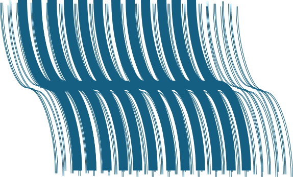

1. Hands-Off Orchestration
Overcome degraded operating environments and connect machines in ways that work for your mission. We use open technologies so you and your business can control your data and reduce reliance on third-party software and storage providers.

2. Physical Reality
Move your operations towards the physical limits set by natural law. Oceans Niagara's Decentralized Edge Execution Framework "ON" is grounded in communications theory, molecular biology, entropy, and the path of least resistance.

3. Error Prevention
We leverage a highly efficient application-layer forward error correction (FEC) fountain code designed for resilient data transmission over unpredictable networks. It operates by breaking a file into a specific number of source blocks and generating an infinite stream of repair symbols. The receiving device does not need to request missing packets when drops occur; it only needs to collect any combination of packets slightly exceeding the original file size to fully reconstruct the data. This eliminates round-trip latency, making it vital for multicast streaming, satellite communications, and distributed file transfers.

4. Compute Efficiency
Whenever possible, we build our core systems using Rust, a highly performant systems programming language designed for safety and speed. It eliminates common bugs like null pointer exceptions and memory leaks without the overhead of a garbage collector. Instead, it relies on a strict compile-time ownership model to manage memory automatically. Our developers leverage it to solve complex orchestration challenges across varying hardware, delivering the raw speed of C++ alongside modern memory safety guarantees.

5. Latency Reduction
Our systems run compilation targets inside a fast, lightweight, and secure binary instruction format that is revolutionizing decentralized and edge computing. Its compact footprint and rapid startup times allow code to deploy instantly across distributed global networks, executing much closer to the end user than traditional containers or virtual machines. Because it runs inside a highly isolated, language-agnostic sandbox, it provides a secure environment for running untrusted code on multi-tenant edge nodes and decentralized networks. This enables developers to deploy complex, near-native performance logic globally with minimal CPU overhead, low memory usage, and zero vendor lock-in.
6. What vs. Where
Our systems often leverage peer-to-peer, decentralized protocols that are changing the internet. Instead of relying on location-based addressing, they use content-based addressing, assigning every file a unique cryptographic hash. Users retrieve data directly from the nearest nodes possessing that specific hash, creating a more resilient network. This structure eliminates central points of failure, cuts bandwidth costs, bypasses server censorship, and ensures that data remains accessible even if the original publisher goes offline.